2022.11.25
Overview：
注意本节不是重点！
- 一位全加器：通过两个加数和上一位进位位，计算出本次的结果和进位位
- 串行全加器：一个结果计算出来下一位再计算，速度慢
- 并行全加器：利用公式把串行全加器结果算出来，这样一下就计算出来了
- 带标志加法器：
和表达式：$S_i= A_i\oplus B_i\oplus C_{i-1}$
进位表达式：$C_i = A_iB_i+(A_i\oplus B_i)C_{i-1}$
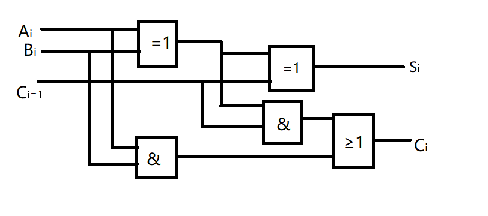
我的理解：
- 和表达式：两个加数和上一位进位位，依次相加，这里的相加用的是异或
- 进位表达式：两种情况，AB都是1，或，AB有一个是1一个是0同时上一位有进位
进位信号g：$X_iY_i$
进位传递信号p：$X_i\oplus Y_i$
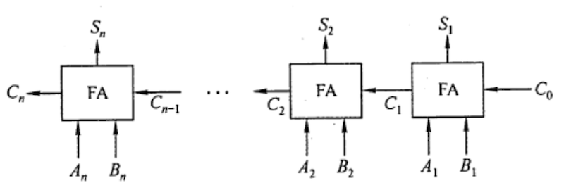
缺点：时间慢
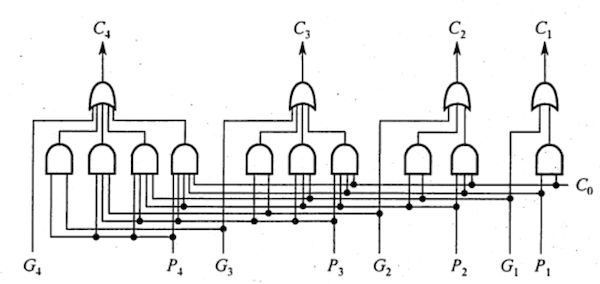
$\begin{align}C_i &= A_iB_i+(A_i\oplus B_i)C_{i-1} \&= G_i+P_iC_{i-1} = 自己两个1+自己一个1上一位有个进位\end{align}$
$C_1 = G_1+P_1C_0$
$C_2 = G_2+P_2C_1 = G_2 + P_2G_1 + P_2P_1C_0$
$C_3 = G_3+P_3C_2 = G_3 + P_3G_2 + P_3P_2G_1 + P_3P_2P_1C_0$
$C_4 = G_4+P_4C_3 = G_4 + P_4G_3 + P_4P_3G_2 + P_4P_3P_2G_1 + P_4P_3P_2P_1C_0$
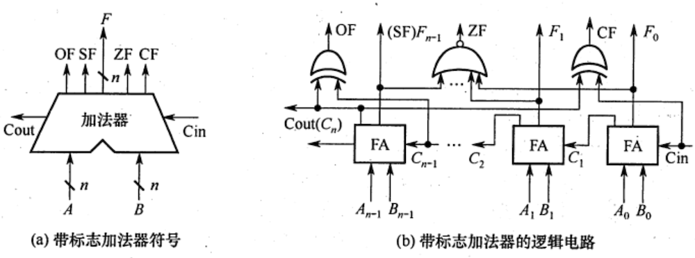
溢出OF（有符号数看OF）：$C_i\oplus C_{i-1}$
符号SF：$F_{n-1}$
零标志ZF=1：当所有F=0
进位/借位CF（无符号数看CF）：$C_{out}\oplus C_{in}$，（加法CF=0，减法CF=1）
强烈推荐课程：
正数全加零，负数原码全加零，负数反码全加一，负数补码左移加0，右移加1
| 码制 | 填补代码 | |
|---|---|---|
| 正数 | 原码、补码、反码 | 0 |
| 负数 | 原码 | 0 |
| 负数 | 补码 | 左移添0 |
| 负数 | 补码 | 右移添1 |
| 负数 | 反码 | 1 |
溢出部分丢弃，左右都补零
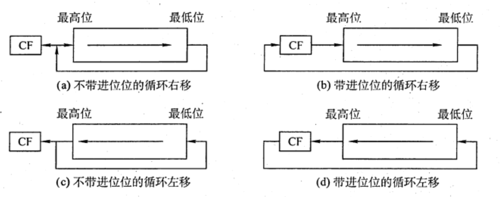
A. 1001 0100，1
B. 1001 0101，0
C. 1001 0101，1
D. 1001 0100，0
【答案】：C
[CF, 11001010]
[CF(1), 10010101]，注意，最左边的1也会同时移动到CF里边！
A.11101100、11101100
B.01101100、11101100
C.11101100、01101100
D.01101100、01101100
【答案】：B
$[x-y]_补 = [x]_补+[-y]_补$
符号位参与运算；最高位进位丢弃
例题：A=15，B=24，求$[A+B]_补$，$[A-B]_补$ $$ \begin{align} A = 15 &= [0,00001111]_补\ B = 24 &= [0,00011000]_补\ -B = -24 &= [1,11101000]_补\ A+B &= [0,00100111]_补\ A-B = -24 &= [1,11110111]_补\ \end{align} $$
溢出判断：只有符号相同的数加减才会溢出
($A_s$：A的符号位，$B_s$：B的符号位，$S_s$：结果的符号位)
一位符号位：$V = A_sB_s\overline{S_s}+\overline{A_s}\cdot \overline{B_s}S_s$
我的理解：
~~就是符号位001或110的时候，V的两项一定是000+111，最后得一。如果符号不同AsBs就会得到零让V得到零~~
- 无论加减法都会加法器实现的，所以我们把加减法都考虑为加法
- 两个正数相加为负数，或两个负数相加为正数，说明溢出
- 正数与负数相加永远不会溢出
双符号位
$$ \begin{align} 正数未溢出：S_{s1}S_{s2}&=00\ 正数溢出：S_{s1}S_{s2}&=01\ 负数溢出：S_{s1}S_{s2}&=10\ 负数未溢出：S_{s1}S_{s2}&=11\ \end{align} $$
$$ V = S_{si}\oplus S_{s2} $$
例题：计算机字长为8位，CPU有一个8位加法器。无符号数x=69， y=38，如果在该加法器中计算x-y，则加法器的两个输入端信息和输入的地位进位信息分别为（ ） $$ \begin{align} x = 69 = 64+4+1 &= 0100,0101\ y = 38 = 32+4+2 &= 0010,0110\ [x]_补 &= 0100,0101\ [-y]_补 &= 1101,1010 \end{align} $$ 不管是补码减法，还是无符号数减法，都是用被减数加上减数的负数的补码来实现的。根据求补码公式，减数y的负数的补码为$[-y]_补=\overline{Y}+1$，因此，在加法器的Y'输入端用一个反向器实现，并用控制端Sub控制多路选择器是否将y的各位取反后，输入Y'端，同时将Sub作为低位进位送到加法器。
当Sub为1时，做减法，当Sub为0时，做加法。69的二进制数为01000101；38的进制数为00100110，各位取反11011001。【这里注意，这道题重点是ALU内部电路实现，所以求$\overline{Y}$。至于$\overline{Y}+1$，是后边继续做的事了】。做减法时，低位进位为Sub,即为1。
答案：0100 0101、1101 1001、1
A.1、1
B.1、0
C.0、1
D.0、0
$[x]_补 = F5H = 1111,0101$
$[y]_补 = 7EH = 0111,1110$
$[-y]_补 = 1000,0010$
$[x]_补+[-y]_补 = 0111,1111$
【答案】：A。加法器的低位进位输入信息就是sub，加法sub为0，减法sub为1.
A. $r_1\times r_2$
B. $r_2\times r_3$
C. $r_1\times r_4$
D. $r_2\times r_4$
【答案】B $$ \begin{align} r_1 &= 1,111\ 11|10_补 = 1,000\ 0010_原 = -2\ r_2 &= 1,111\ 00|10_补 = 1,000\ 1110_原 = 14\ r_3 &= 1,00|1\ 0000_补 = 1,111\ 0000_原 = 114\ r_4 &= 1,111\ |1000_补 = 1,000\ 1000_原 = 8\
\end{align} $$
A.CF=0,OF=0
B.CF=1,OF=0
C.CF=0,OF=1
D.CF=1,OF=1
答案：R1<R2 所以借位CF=0，没有溢出OF=0，A $$ \begin{align} [R_1]_补 &= FFFF,FFFF\ [R_2]_补 &= FFFF,FFF0\ [R_1 - R_2]_补&=FFFF,FFFF \end{align} $$
注意定点小数的除法也是用定点数来表示的，表示不了大于1的小数，所以定点小数除法中，被除数一定要小于除数！
| 算法 | 符号位 | 移动 | 累加 |
|---|---|---|---|
| 原码一位乘法 | 单独运算 | n | n |
| 补码一位乘法（Booth） | 参与运算 | n | n+1 |
| 原码除法（恢复余数） | 单独运算 | n | n+k |
| 原码除法（加减交替） | 单独运算 | n | 最后余数为正: n+1 最后余数为负: n+2 |
| 补码除法（加减交替） | 参与运算 | n | n+1 |
SUMMARY: 移一次，加一次
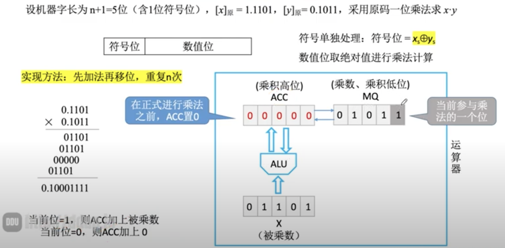
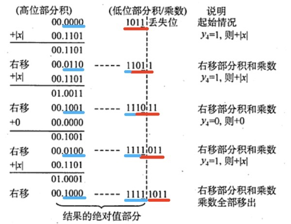
符号位：$P_s = x_s\oplus y_s = 1$
结果：$[x\cdot y]_原 = 1,10001111$
推荐网课：
SUMMARY：移一次加一次，最后多加一次
符号参与运算
运算规则
| $y_n$ | $y_{n-1}$(辅助位) | 操作 |
|---|---|---|
| 0 | 0 | 部分积右移一位 |
| 0 | 1 | 部分积右移一位，加$[y]_补$ |
| 1 | 0 | 部分积右移一位，加$[-y]_补$ |
| 1 | 1 | 部分积右移一位 |
| a | b | 部分右移一位，加$[(a-b)\times y]_补$ |
例题
我的理解：
如果每次加法都是加1移位，比如$101111\times x$，可以把一些连续的1合并起来进而减少加法次数：$101111\times x = 110000\times x - 1\times x$
“丢失位(右)”减去“最后一位(左)”是-1，说明处于连串的1要开始了，先减一个小的。
“丢失位(右)”减去“最后一位(左)”是0，说明处于连串的1或0之间，不做运算。
“丢失位(右)”减去“最后一位(左)”是1，说明处于连串的1结束了，加一个大的。
符号单独运算
例题：$[x]_原=0,1101, [y]_原=0,1011$
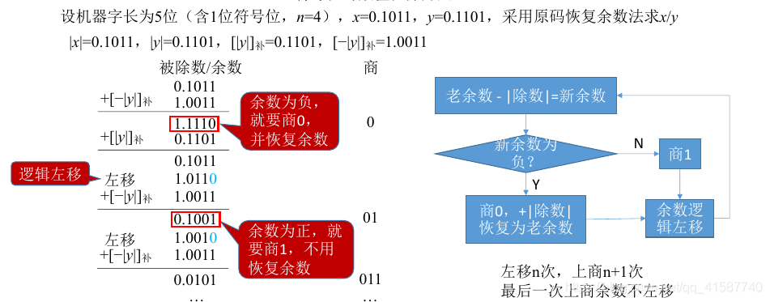
符号位：$P_s = x_s\oplus y_s = 0$
结果：$[x\cdot y]_原 = 0,1101$
资源推荐：
符号单独运算
加减次数：最后余数为正 n+1次，最后余数为负n+2次
左移次数：n次，最后一轮不需要移动
例题：$[x]_原=0,1101, [y]_原=0,1011$
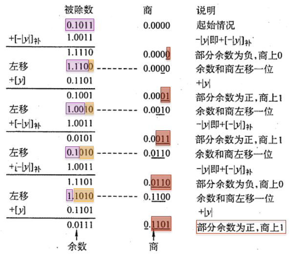
符号位：$P_s = x_s\oplus y_s = 0$
结果：$[x\cdot y]_原 = 0,1101$
我的理解：
- 恢复余数如何变成加减交替：之前的不恢复余数法太慢了，如果商1后结果是负数，原来的做法是把除数加回去左移再商1，现在这一步可以被简化成左移再加$[+|y|]_补$
- 最后一轮没办法用上述方法了，所以变成了恢复余数法，如果余数为正，商1，如果余数为负，商0，然后恢复余数。
加减交替法的规则如下：
①符号位参加运算，除数与被除数均用补码表示，商和余数也用补码表示。
②若被除数与除数同号，则被除数减去除数；若被除数与除数异号，则被除数加上除数。
③若余数与除数同号，则商上1，余数左移一位减去除数：若余数与除数异号，则商上0,余数左移一位加上除数。
④重复执行第③步操作n次。
⑤若对商的精度没有特殊要求，则一般采用“末位恒置1”法。
例题： $$ [x]_原=0,1101, [y]_原=1,1011\ [x]_补 = 0,1101\ [y]_补 = 1,0101\ [-y]_补 = 0,1011\ $$
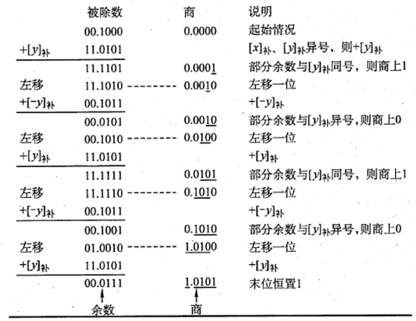
补码不恢复余数法，够减商0，不够减商1
一般机器采用补码进行存储，下面是同样的内容通过short和unsigned short解释的结果：
| 变量 | 真值 | 15 | 14 | 13 | 12 | 11 | 10 | 9 | 8 | 7 | 6 | 5 | 4 | 3 | 2 | 1 | 0 |
|---|---|---|---|---|---|---|---|---|---|---|---|---|---|---|---|---|---|
| short x | -4321 | 1 | 1 | 1 | 0 | 1 | 1 | 1 | 1 | 0 | 0 | 0 | 1 | 1 | 1 | 1 | 1 |
| usigned short y | 61215 | 1 | 1 | 1 | 0 | 1 | 1 | 1 | 1 | 0 | 0 | 0 | 1 | 1 | 1 | 1 | 1 |
案例：
#include <stdio.h>
int main(){
unsigned short x = 65535;
short y = (short)x;
printf("x=%u, y=%d\n",x,y);
// x=65535, y=-1
return 0;
}
多出的部分截断，少的位数补“零”
案例：
#include <stdio.h>
int main(){
int x = 165537, u = -34991; // int 占用4B
short y = (short)x, v = (short)u; // short 占用2B
printf("x=%d, y=%d\n",x,y);
printf("u=%d, v=%d\n",u,v);
// x=165537, y=-31071
// u=-34991, v=30545
return 0;
}
int i = 01234567H;
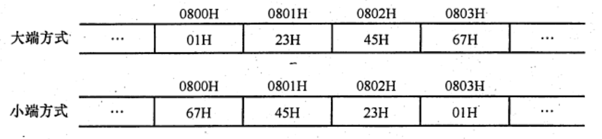
对齐方式：
char按1B，short按2B，int占4B，douoble占8B
例题：
C struct node{ char id[9]; char name[16]; int post; char phone[20]; }若变量x的数据类型为strcut node，x的首地址是 0x804 9818，x.phone的起始地址？
18 + 9 = 18 + 8 + 1 = 21
21 + 16 = 21 + 15 + 1 = 31
注意int需要从4B整数倍开始存储，31 -> 34
34 + 4 = 38
答案：0x804 9838
假设32位计算机：
边界对齐：
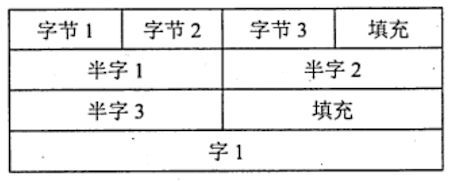
边界不对齐：
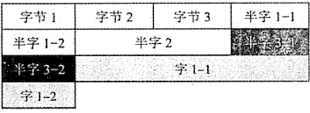
边界对齐方式相对边界不对齐方式是一种空间换时间的思想。精简指令系统计算机通常采用边界对齐方式，因为对齐方式取指令时间相同，因此能适应指令流水线。
strcut{
int a;
char b;
short c;
}record;
record.a = 273;
若record变量的首地址为0xC008，地址0xC008中的内容及record.c的地址分别为（ ） A. 0×00, 0xC00D B. 0x00, 0xC00E C. 0x11, 0xC00D D. 0x11. 0xC00E 【答案】：注意，char类型是8bit。答案D $$ \begin{align} 1:\ &C008&&C009&&C00A&&C00B\ 1:\ &a_4&&a_3&&a_2&&a_1\ 2:\ &C00&&C00D&&C00E&&C00F\ 2:\ &b&&c_2&&c_1&&/\ \end{align} $$
$$ a = 273 = 256+16+1=00..01,0001,0001=00,00,00,11H $$
【2009 统考真题】一个C语言程序在一台32 位机器上运行。程序中定义了三个变量x、y、z，其中x和z为int型，y为short 型。当x=127、y=一9时，执行赋值语句z = x + y 后, x、y、z分别为 A. x=0000007FH, y=FFF9H, z=00000076H B. x=0000007FH, y=FFF9H, z=FFFF0076H C. x=0000007FH, y=FFF7H, z=FFFF0076H D. x=0000007FH, y=FFF7H, z=00000076H $$ \begin{align} x &= 127 = 01111111_原 = 0000007F_补\ y &= -9 = 1,0000\ 1001_原 = 1,1111\ 0111_补=FFF7_补\ z &= 0000007F_补+FFF7_补 = 00000076_补 \end{align} $$
【2021统考真题】嘉定编译器规定int和short类型长度分别为32位和16位，执行下列C语言语句：
unsigned short x = 65530;
unsigned int y = x;
得到的机器数是（ ）
【答案】：B $$ \begin{align} 65535-65530&=5\ 65530 &= 1111,1111,1111,1010=FFFA\ \end{align} $$
【答案】：两个进位位异或为0！无溢出 $$ \begin{align} x&=1,111,0100\ y&=1,011,0000\ 2x&=1,110,1000\ y/2&=1,101,1000\ 2x+y/2&=11,100,0000=1,100,0000 \end{align} $$
int=0;对应指令的机器代码为“C745FC00000000”,则语句int i = -64;对应指令的机器代码是()。A.C7 45 FC C0 FF FF FF
B.C7 45 FC 0C FF FF FF
C.C7 45 FC FF FF FF C0
D.C7 45 FC FF FF FF 0C
答案：注意！小端字节序！A
unsigned int x = 134;
unsigned int y = 246;
int m = x;
int n = y;
unsigned int z1 = x - y;
unsigned int z2 = x + y;
int k1 = m - n;
int k2 = m + n;
若编译器编译时将8个8位寄存器R1～R8分别分配给变量x、y、m、n、z1、z2、k1和k2，回答下列问题（有符号整数用补码表示）：
执行上述程序段后，寄存器R1和R5和R6的内容？（用16进制表示） $$ \begin{align} m=x &= 10000110\ n=y &= 11110110\ R_5=z_1-z_2&=10010000=90H\ R_6=z_1+z_2&=01111100=7CH\ R_1 &= 86H\
\end{align} $$
执行上述程序段后，变量m和k1的值（用10进制表示）？ $$ \begin{align} m &=11111010=-122\ k_1&=11110000=-112 \end{align} $$
上述程序段涉及有符号整数加减、无符号整数加减运算，这四种运算能否利用同一个加法器辅助电路实现？说明理由
能。n位加法器实现的是模$2^n$无符号数的整数加法运算。对于无符号数a和b，a+b可以直接用加法器实现，而a-b可用a加b的补数实现，即a-b=a+[-b]补，所以n位无符号整数加减运算都可在n位加法器中实现。
计算机内容内部如何判断有符号整数加减运算的结果是否发生了溢出？上述程序段中，哪些有符号整数运算语句执行结果会发生溢出？
输入的两个数的符号相同，但与输出结果符号不同。最后一条会溢出。